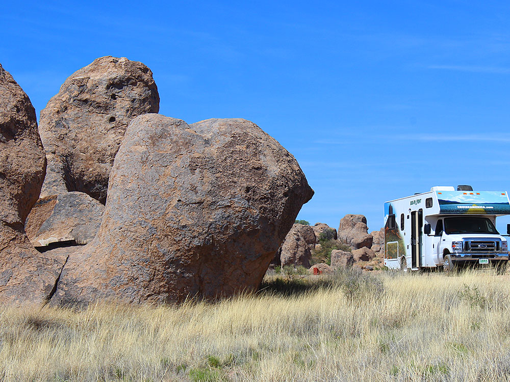
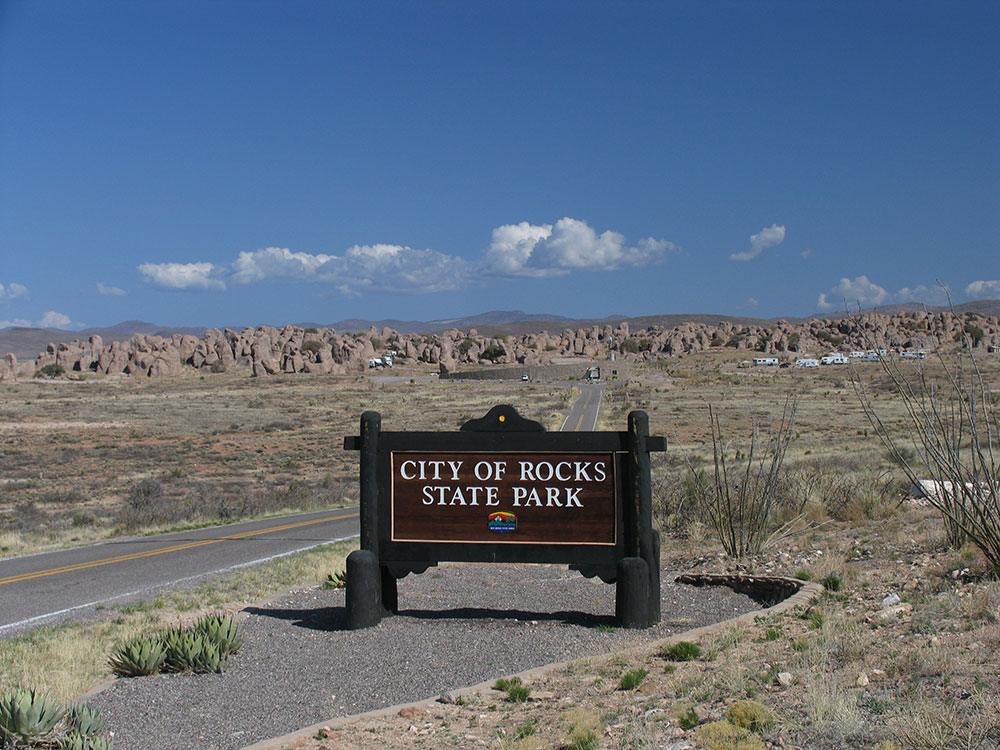
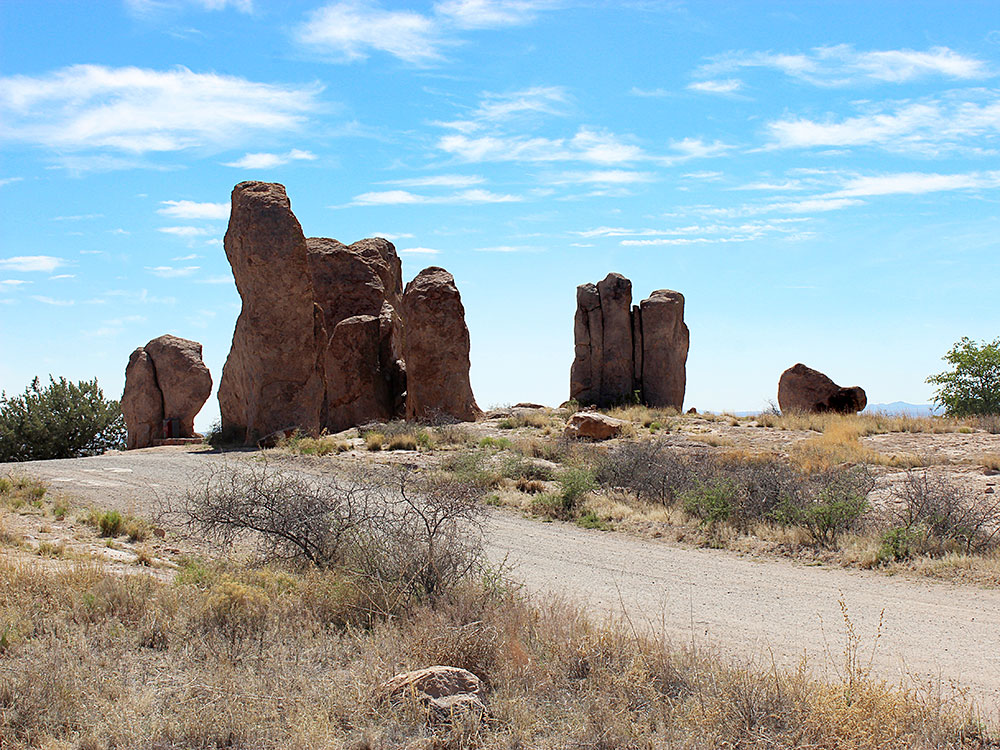

State park consisting of large sculptured rock formations in the shape of pinnacles or boulders rising as high as 40 feet
General Information
Open year-round
Visitor Center hours vary seasonally
Camping: $15–$30 per night depending on site type
Annual New Mexico State Parks pass accepted
How to Get There
From Deming (30 mi): Take US-180 W from Deming toward Silver City for about 25 miles, then turn right onto NM-61 and follow the signs for approximately 4 miles to the park entrance.
Overview
City of Rocks State Park is a small park in the Chihuahuan Desert of southwestern New Mexico where clusters of rock pinnacles up to 40 feet tall rise from the desert grassland like the buildings of a ruined city. The formations were created about 35 million years ago when a huge eruption of the Emory Caldera deposited volcanic tuff, which erosion later carved into towers, walls and narrow passageways. The park was created in 1953 and is one of the best places in the state to camp, scramble among the rocks and look at stars. Visitors come for the otherworldly rock maze, easy walking and climbing, a desert botanical garden and some of the darkest skies in New Mexico, with an observatory and a telescope used for star parties.
Access
The park is in Grant County near the village of Faywood, about 30 miles northwest of Deming and about 28 miles southeast of Silver City. Most visitors arrive by car on paved roads: take US-180 and turn onto NM-61, then drive about 4 miles to the park entrance. The park road is paved, and the campground, picnic areas and visitor center are near the formations. There is no public transportation, and services are limited, so fuel and groceries are best purchased in Deming or Silver City.
Seasons
The park is open year-round, and spring and fall bring the most comfortable temperatures for scrambling and hiking. Summer days can be very hot, so mornings and evenings are best, although the stars can be spectacular on summer nights, and afternoon storms occasionally appear. Winters are mild with cool nights, fewer crowds and clear skies for stargazing. Wildflowers appear in spring after wet winters, and the park is especially popular on weekends and holiday periods for camping.
Things to Do
Explore a Maze of Volcanic Rock Pinnacles
City of Rocks State Park is known for its natural stone "city," where winding passages and shaded alleys between the formations invite exploration. The setting is a favorite for families and photographers.
Scramble and Climb Among the Rocks
Visitors can scramble around and between the formations on informal paths, and bouldering is popular with climbers who bring their own gear. Stay on durable surfaces and avoid damaging the fragile desert plants.
Stargaze Under Dark Desert Skies
The park's remote setting makes it one of the best places in the state for astronomy. A public observatory with a telescope offers programs, and the campground is a good base for night-sky viewing.
Walk the Desert Botanical Garden
A short interpretive trail through the botanical garden showcases native desert plants such as cacti, yucca and agave, with signs explaining the ecosystem.
Bike, Picnic and Watch Wildlife
Designated routes allow mountain biking through the desert, and picnic areas are nestled among the rocks. Roadrunners, jackrabbits and a variety of birds are commonly seen.
Top Trails
City of Rocks Trail
Length: Approximately 6.4 miles
Elevation Gain: Approximately 500 feet
Difficulty: Moderate
The longest trail in the park loops around and through the rock formations, with sweeping desert views and a thorough look at the volcanic stone city.
Table Mountain Trail
Length: Approximately 2 to 3 miles
Elevation Gain: Moderate
Difficulty: Moderate
This trail climbs to a high viewpoint with panoramic views of the surrounding mountains and desert. It is a good choice for sunset.
Desert Botanical Garden Trail
Length: Approximately 0.5 to 1 mile
Elevation Gain: Minimal
Difficulty: Easy
This short interpretive path highlights native desert plants and is ideal for families and visitors with limited time.
The bedrock forming City of Rocks was created 34.9 million years ago by a volcanic eruption. Then over millions of years, erosion sculpted the rock formations seen today. The eruption was from the Emory Caldera, centered near Hillsboro Peak at the southern end of the Black Range. The eruption was estimated to be a VEI 8 eruption, and it emplaced the Kneeling Nun Tuff, a tuff bed covering an area of 314-square-mile (810 km2), which makes up the bedrock of the park.
History
The Mimbreno Indians settled in the area from 750 to 1250 AD. Pottery, arrowheads, and other artifacts show evidence of prehistoric Indians in the area. Indian wells, or conical holes, are found in the rocks where water would be allowed to collect.
Chapter 110 of the 1953 Laws of New Mexico created City of Rocks State Park on March 20, 1953. This legislation provided for the lease of 640 acres (2.6 km2) of land from the Commissioner of Public Lands, New Mexico State Land Office for the purpose of a State Park and recreation area.
Features
City of Rocks State Park provides opportunities for walks, hiking, camping, rock climbing, picnicking, wildlife viewing, and dark night-sky viewing (including a 14-inch (36 cm) telescope). Other features of the park include hiking trails, picnic areas and a desert botanical garden. The visitor center includes a large display area, books, maps, and information.
The park is open all year. Nearby are the communities of Silver City and Deming. Facilities include electrical and water hookups for camping, with restrooms and hot showers.
Visitor Centers
The City of Rocks Visitor Center has a large display area with exhibits on the park's geology, history and wildlife, along with books, maps and information about trails, stargazing programs and camping. Rangers can help with trail suggestions and event schedules. Hours vary seasonally, so check the New Mexico State Parks website for current times. The visitor center is near the main park road close to the campground.
Camping and Lodging
The park has a developed campground with tent and RV sites, many tucked among the rocks, with water and electric hookups at some sites, restrooms and hot showers. Reservations are recommended on weekends and holidays. There is no lodging in the park. Hotels, inns and restaurants are in Silver City, about 40 minutes away, which has a historic downtown, and in Deming, about 35 minutes away. Faywood Hot Springs is just down the road and offers soaking pools and lodging, and Rockhound State Park near Deming offers additional camping. Check each property's website for current availability.
This article uses material from the Wikipedia article "City of Rocks State Park", which is released under the Creative Commons Attribution-Share-Alike License 3.0 Additional information from New Mexico State Parks.




